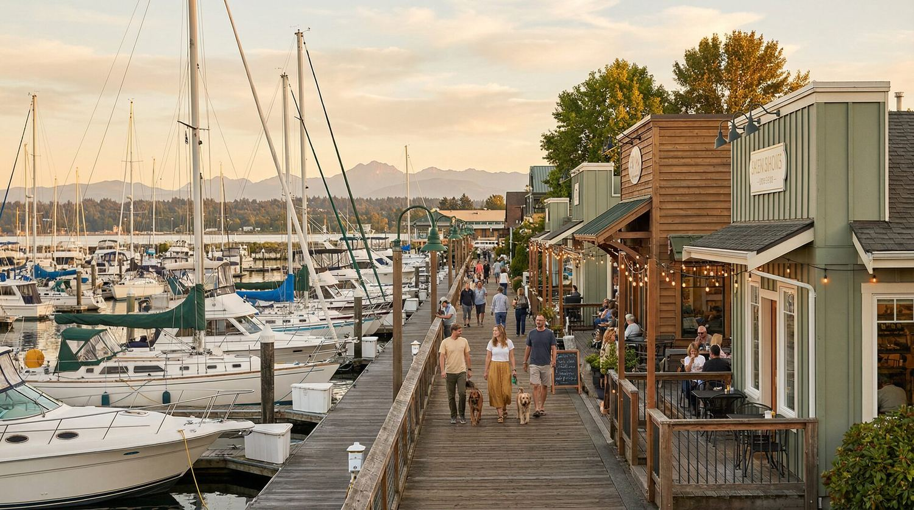
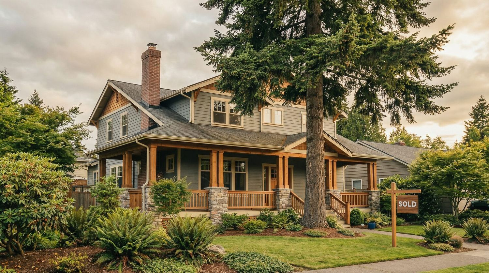

A home buyer's guide · Everett, Washington · 2026living in Everett,

A home buyer's guide · Everett, Washington · 2026living in Everett,
Chapter 01 · The city
It is the largest city in Snohomish County, and the single most useful thing to understand before you shop here is how much it varies from one part of town to the next.
The city includes older neighborhoods near downtown, areas overlooking Port Gardner Bay, neighborhoods around Silver Lake, residential areas near major commercial corridors, and areas near the Snohomish River. City planning documents describe residential areas ranging from primarily single-family neighborhoods to apartment and condominium developments, with commercial and mixed-use development concentrated in places including Metro Everett, Broadway, Evergreen Way, Everett Mall Way and the Port of Everett.
That variety is the point. Two Everett addresses can offer very different housing, transportation and lifestyle options. It is why a citywide description, including this one, can only take you so far.
113,567
Population, July 1, 2025 estimate
33.2
Square miles of land
"Two homes with an Everett address can offer very different daily lives. That is the whole reason to look closely."
Source: U.S. Census Bureau QuickFacts, Everett city, Washington. 2020 Census population was 110,629.
Everett also offers a genuine mix of housing rather than one dominant option. The City's 2044 Comprehensive Plan identifies single-family homes, townhouses, multifamily housing and mixed-use development. Older architecture is part of the picture too: the city's historic register includes buildings from Everett's early development, among them the Everett Theatre from 1901.

Chapter 02 · The market
Housing statistics need explaining, because different websites measure different things and none of them are describing your street.
As of July 31, 2026, Zillow's typical home value for Everett was $648,066, down 1.6% from a year earlier. Zillow calls this its Home Value Index. It is a measure of typical home values based on Zillow's methodology. It is not the median price of homes currently listed for sale. Zillow also reported 414 homes in for-sale inventory, 166 new listings in July, and 13 median days to pending, which measures time until a listing goes pending and is not the same as days on market.
Realtor.com's June 2026 report put the median listing price at $629,995, with a median sold price of $629,000, 610 active listings and a median 34 days on market. Their live search page, which is newer, currently shows roughly $592,475 and 46 average days on market.
$648,066
Zillow typical value · July 31, 2026
$629,995
Realtor.com median list · June 2026
"Everett does not have one meaningful home price. Price varies by property type, condition, lot, location and neighborhood."
Sources: Zillow Everett, WA Housing Market; Realtor.com Everett, WA Housing Market and Rental Trends. Figures move. Always check the date attached to a number before you rely on it.
The practical takeaway: citywide statistics are useful for understanding the broad market, but they are not a substitute for comparing similar homes in the part of Everett where you actually want to live.
Chapter 03 · Getting around
Everett is served by several forms of public transportation, but access varies a lot by address.
Weekday morning Sounder N Line trains run from Everett to King Street Station under the published March 27 to August 28, 2026 schedule. Actual service can vary, so check the current schedule before you count on it.
Community Transit's Swift Blue Line connects to Sound Transit's regional light rail at Shoreline North/185th Station.
Serves the Boeing-Everett area and runs south toward Bothell.
Local service connects most major destinations in the city, including Airport Road.
Sound Transit's current plan calls for the Everett Link Extension to reach the SW Everett Industrial Center in 2037, and the SR 526/Evergreen and Everett Station stops in 2041. Those are plans, not existing service.
If commuting matters to your purchase, test the actual trip from any home you are considering, at the time of day you normally travel. A generic online estimate is not the same thing.
Chapter 04 · Outside
Outdoor access is a major part of Everett's geography, and it is one of the things people are surprised by when they move here.
Commercial areas are spread across the city rather than concentrated in one place: Metro Everett, Broadway, Evergreen Way, Everett Mall Way and the Port of Everett. The Port waterfront includes restaurants and other visitor-oriented businesses, with more mixed-use development underway at Waterfront Place.
Before choosing a home, map the places you expect to use every week: groceries, medical care, work, parks, transit, restaurants. Then drive the route yourself.
Chapter 05 · Schools
Everett Public Schools has strong measurable indicators. It also has boundaries that can change, which is why the address matters more than the reputation.
96.3%
Four-year graduation rate, Class of 2025
16%
Share of WA schools recognized that year
"Rather than relying on general rankings, look at graduation rates, programs, transportation and school size. Then verify the exact address."
Sources: Everett Public Schools; Washington Office of Superintendent of Public Instruction 2025 student-outcomes data. Cedar Wood Elementary, Mill Creek Elementary and Heatherwood Middle School were honored through the Washington School Recognition Program for 2024 to 2025.
The district reported a 96.3% four-year graduation rate for the Class of 2025, the highest in district history, and OSPI reports the same figure. Everett Public Schools also offers choice programs and options that require separate applications.
School assignment varies by address, and boundaries can be modified. Everett Public Schools maintains the official attendance-boundary information. Verify the exact property address with the district before making a purchase decision based on schools.
Chapter 06 · Before you offer
Print this page. Take it with you. The house is only half of what you are buying.
Water, slopes, railroads, traffic, future development and zoning can all matter depending on the property. None of these factors automatically makes one neighborhood better than another. They are reasons to investigate the particular home rather than buying from a neighborhood description alone.
Most important: decide what your everyday life would look like there. A home can meet every item on a property checklist and still be in the wrong location for the way you actually live.
one last thing,
I have been in real estate for 17 years and a Snohomish County broker since 2015, and Everett is a market where looking at the details really matters.
If you are considering Everett, I am happy to help you narrow the search, tour different parts of the city and understand what you are buying before you make an offer. No pressure. The goal is simply to find the home and location that make sense for you. I take a maximum of two active buyers at a time, so you get my full attention while we do it.
Kim Pelham
The Pelham Group NW · Brokered by Katrina Eileen Real Estate
425-250-9422 · kim@thepelhamgroupnw.com
thepelhamgroupnw.com
Sources: U.S. Census Bureau QuickFacts; Zillow Everett, WA Housing Market; Realtor.com Everett, WA Housing Market and Rental Trends; City of Everett Comprehensive Planning; City of Everett Parks, Trails and Open Space; Everett Public Schools; Washington OSPI; Community Transit Swift; Sound Transit Everett Link Extension. Figures are current as of the dates noted and will change.